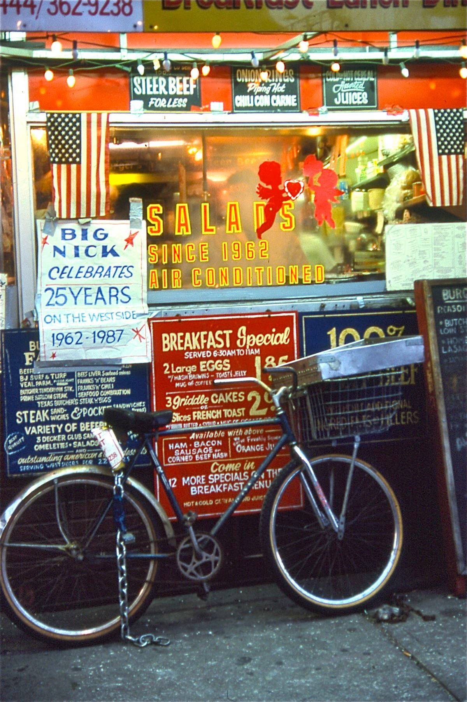

The Burger Joint in 1987.
In the 70s, it was a tiny place that looked like it’d be a health hazard (maybe it was), but was really a gem of the Upper West Side. At some point in the 80s it expanded, and managed to survive until just recently, when rents got too damn high.